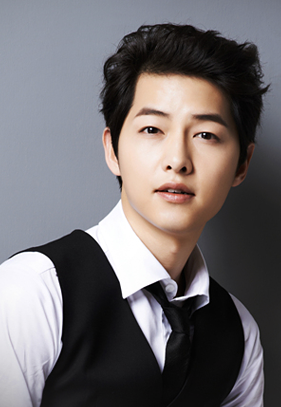

宋仲基
1985年9月19日出生于韩国大田广域市，韩国演员、主持人。2008年出演电影《霜花店》进入演艺圈。2009年在音乐节目Music Bank中担任主持，后在艺能节目《Running man》中担任固定嘉宾（E01——E41）。2010年出演电视剧《成均馆绯闻》具龙河一角，获得KBS演技大赏最佳人气奖。2011年在电视剧《树大根深》中饰演青年世宗，获得SBS演技大赏PD奖。2012年接拍KBS水木剧《善良的男人》，在KBS演技大赏中获得最佳男演员奖、网络人气奖及最佳情侣奖。同年主 ... >>>